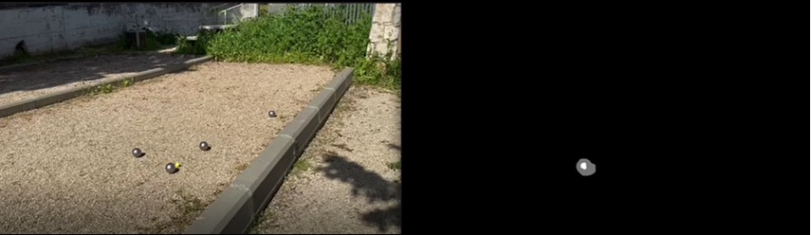

Final project by
Yuval Rappaport & Roi Moshe
Rappayuv@post.bgu.ac.il & roimo@post.bgu.ac.il
Petanque’s objective is to score the most points by getting the boules closer to the target than the opponent. This is achieved by throwing or rolling boules closer to the small target boule (officially called ‘Cochonnet’) or by hitting the opponent’s boules away from it. The game takes place while standing inside a circle with both feet on the ground.
We wanted to create an application that can help petanque players. This app will have the following capabilities, for static pictures or short movies:
In order to focus on the main playboard of the processed image and filter unnecessary noise, we wanted to mask the background. In this way we could enhance the future edge detection with more consummate parameters. The recommended method is using bilateral filtering for sharpening the edges and then K-means algorithm. While using this method we encountered numerous problems such as:
In order to create a smaller clearer polygon for further analysis, we tried using the Hough lines method, with the field borders narrowing the picture. By doing this, we could delete irrelevant parts of the masked image (the output of the first K-means stage). We encountered numerous problems here:
Decision: Due to implementation problems, the results were not good enough. Consequently, we decided to use different methods to identify only the relevant parts.
The K-means part returns the main part of the picture including the field. However, because the original picture was extremely blurry, the edge frames of the field (the concrete frames) were also displayed. In order to subtract them we created a burning algorithm that decreases the edges of each blob and reduces the noise in each picture. Example:
In this part we wanted to detect the game boules. In order to achieve better results we used a masked picture of the field. We encountered the following problems in this part:
While the first edge detection was usable for static pictures, we wanted to detect edges in videos as well. We used a PCA background algorithm that works as follows:
In this part we wanted to identify the cochonnet. The main characteristic of the cochonnet is a relatively solid color which is distinct from its surroundings. We therefore tried to identify it by color. We analyzed the pixels by color, and left only pixels that match the color spectrum. After a few tries we understood that we will have to subtract ‘noise’ coming from pixels that share the cochonnet’s color. Furthermore we needed to strengthen the colors of the cochonnet. We therefore decided to convolute the picture with a small kernel to enhance the cochonnet area and delete “noise”.
After locating the boules in the picture we wanted to divide them into teams. It is apparent that one of the teams has grooved boules whilst the other has smooth boules. We therefore wanted to use edge detection in order to find the boules that will have more edges inside. The main problem was to find suitable parameters for the edge detection and differentiate between edges inside boules to edges outside. In order to achieve the desired results we:
In order to find the closest boule to the cochonnet, we needed to create a geometric projection to find where the boules are actually located. In order to make these calculations we relied on the following parameters:
Describe and show here your results. Using images/videos is particularly welcome.
Discuss the results vis-a-vis your goals and make conclusions.